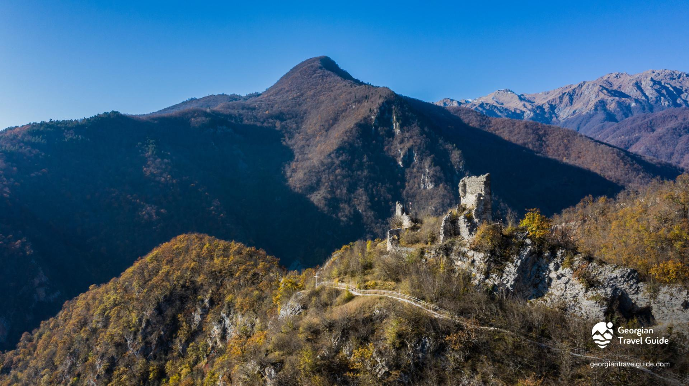
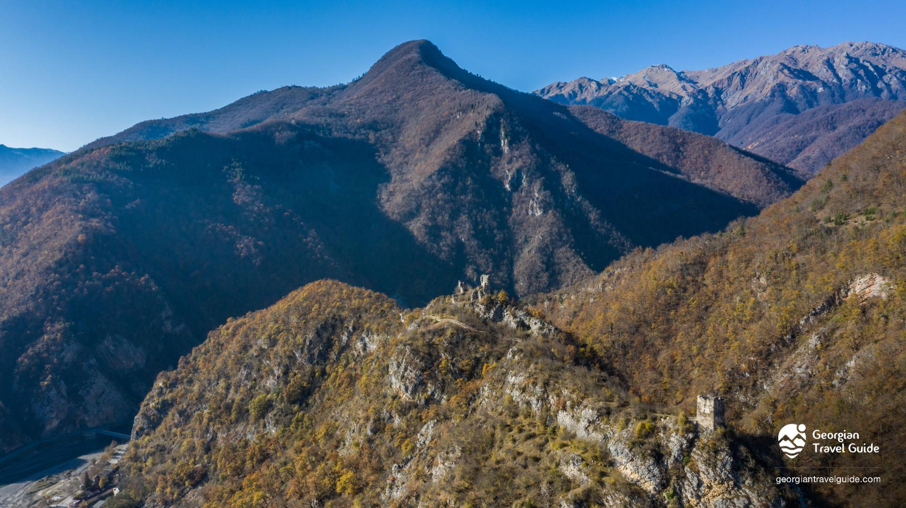

მურის ციხე
მურის ციხე ლეჩხუმში, სოფელ დოღურაშთან ახლოს მდებარეობს, ლეჩხუმ-სვანეთის საზღვარზე. იგი აგებულია ადრეულ შუა საუკუნეებში და XIX საუკუნემდე მოქმედი იყო. მურის ციხე შემდეგ წერილობით წყაროებში იხსენიება: ვახუშტი ბაგრატიონის „აღწერა სამეფოსა საქართველოსა“, ბაგრატ ბაგრატიონის „ახალი მოთხრობა“, ნიკო დადიანის „ქართველთ ცხოვრება“, იოანე ბაგრატიონის „კალმასობა“, თეოდოსი განგრელის „მოგონებები“, იოჰან გიულდენშტედტის „მოგზაურობა საქართველოში“. ლეჩხუმის საფოტიფიკაციო ნაგებობებს შორის მდებარეობით, სტრატეგიული მნიშვნელობით და ფუნქციური დატვირთვით მურის ციხე ერთ-ერთი გამორჩეული ძეგლია. იგი მის მოპირდაპირედ, კლდოვან ნაპირზე მდგარ რაგვის კოშკთან ერთად, ცხენისწყლის ხეობიდან ბარისაკენ მიმავალ გზებს კეტავდა. მურის ციხის ტერიტორიაზე აღმოჩენილია ანტიკური ხანის ქვევრ-სამარხები, ბრინჯაოს, რკინის, კერამიკის და ოქროს ნივთები. გვიან შუა საუკუნეებში აქ დადიანების სასახლე იყო. ზოგიერთი ავტორი მურის ციხეს ბერძნულ წყაროებში მოხსენიებულ სხიმარ-სქიომართან აიგივებდა. ციხესთან მცირე ზომის დარბაზული ეკლესიაა, რომელსაც მაქსიმე აღმსარებლის სახელს უკავშირებენ. ციხის კომპლექსის თავციხესა და ორ კოშკს თავიანთი სახელები აქვთ: “მარჯვედ დახვდი”, “ჰკა მაგას” და “არ გაუშვა”. იმასთან დაკავშირებით, თუ რომელ კოშკს რა სახელი ერქვა, სხვადასხვა მოსაზრება არსებობს, მ.ალავიძის და მ.კალაშნიკოვის მოსაზრება შემდეგნაირია: აღმოსავლეთის სათვალთვალო კოშკს ეწოდებოდა „ჰკა მაგას“, რომელსაც თავციხისათვის - „მარჯვედ დახვდი“ უნდა ეცნობებინა მტრის მოახლოება, დამარცხებულ მტერს უკანდახევისას დასავლეთის კოშკთან - „არ გაუშვა“ უნდა გაევლო. აღსანიშნავია, რომ მურის ციხე ყოველ ეტაპზე პასუხობდა თავისი დროის მოთხოვნებს. სხვადასხვა პერიოდის სამშენებლო ფენებში ჩანს, რომ საბრძოლო იარაღის გაუმჯობესებამ ასახვა ჰპოვა ნაგებობის საერთო გადაწყვეტასა და დეტალებში.
არქიტექტურა
მურის ციხეს მაღალი, კლდოვანი თხემის შუა ნაწილი უჭირავს. აღმოსავლეთით, ციხის მისადგომს ოთხკუთხა კოშკი იცავს, დასავლეთით კი, თხემის განაპირას, სათვალთვალო კოშკი მდგარა. მთის ძირში, მდინარის ორივე ნაპირას თითო კოშკი დგას. ციხეს ერთადერთი შესასვლელი სამხრეთ-დასავლეთიდან აქვს. კომპლექსის აღმოსავლეთის ნაწილი სწორკუთხა ფორმის ოთხსართულიან ციხე-სახლს უჭირავს. ამ ნაგებობის სამი გვერდი ორმაგი კედლით ყოფილა ნაშენი, მეორე კედელი შიგნიდან ამოუყვანიათ. ციხე-სახლის პირველ სართულს სამეურნეო დანიშნულება უნდა ჰქონოდა. შენობის დასავლეთის მხარეს შემორჩენილია მეორე სართულის კარის ღიობი. შესასვლელის მოპირდაპირედ გაჭრილი სარკმელი, როგორც ჩანს, ციხის მისადგომების სათვალთვალოდ გამოიყენებოდა. მესამე სართულზე ფართო ოთხკუთხა ღიობები გვხვდება. ბოლო სართული საბრძოლო იყო და მაშიკულებით სრულდებოდა. ციხის ეზოში შემორჩენილია სწორკუთხა სათავსოს ფრაგმენტები, რომელიც ციხე-სახლს ეკვროდა. ჩრდილოეთის მხრიდან ციხეს კლდეზე დაშენებული გალავნის კედელი ზღუდავს.

მერია
რუსთაველის ქუჩა N 58
(+995) 599 18 24 25
tsagerimeria@gmail.com
საკრებულო
რუსთაველის ქუჩა N 69
(+995) 551 17 97 41
tsagerisakrebulo@gmail.com